# definegrid
p_grid <-seq(from=0,to=1,length.out=20)
# defineprior
#prior <-rep(1,20)
prior <-ifelse(p_grid<0.5,0,1)
# computelikelihoodateachvalueingrid
likelihood <-dbinom(6,size=9,prob=p_grid)
# computeproductoflikelihoodandprior
unstd.posterior <-likelihood*prior
# standardizetheposterior,soitsumsto1
posterior <-unstd.posterior/sum(unstd.posterior)Statistical Rethinking 2023
Lecture 1
The content of this lecture should be reviewed and posted.
Lecture 2
<To be reviewed with lecture contents>
A new model is born when we write:
\[ W\sim Binomial(N,p) \]
with
\[ p\sim Unif(0,1) \]
Simulation of Bayesian Experiment
plot( p_grid,posterior,type="b",
xlab="probability ofwater",ylab="posteriorprobability")
mtext( "20points")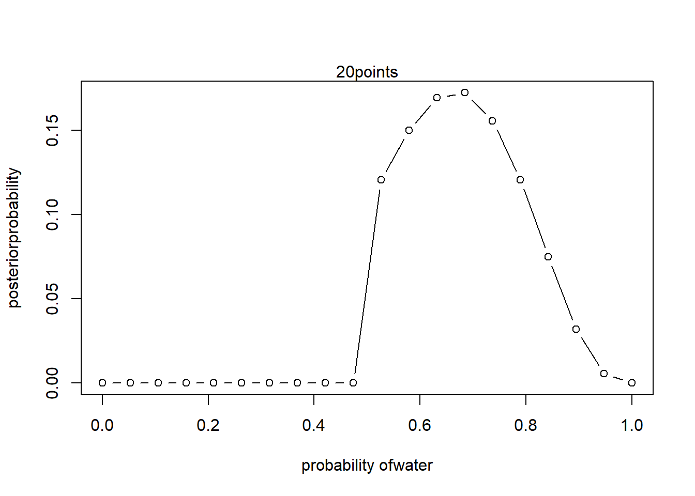
Homework 1
Suppose the globe tossing data had turned into a 4-water and 11-land. Construct the posterior distribution.
# 2.7 analyticalcalculation
W <-6
L <-3
curve( dbeta(x,W+1,L+1),from=0,to=1)
# quadraticapproximation
curve( dnorm(x,0.67,0.16),lty=2,add=TRUE)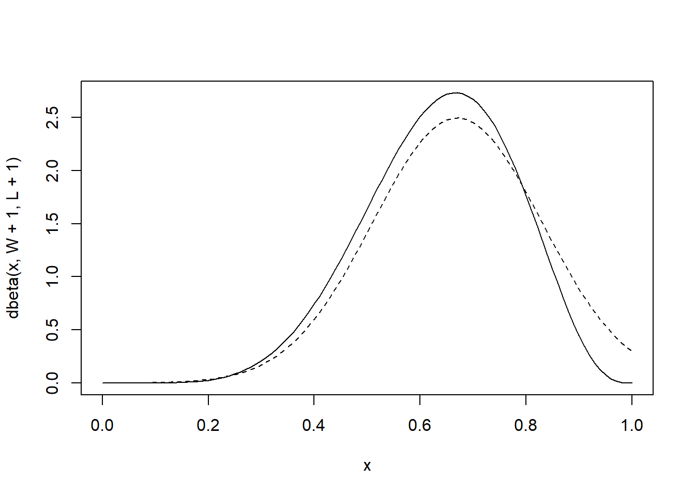
Simulation of Bayesian Experiment
# definegrid
p_grid <-seq(from=0,to=1,length.out=20)
# defineprior
#prior <-rep(1,20)
prior <-ifelse(p_grid<0.5,0,1)
# computelikelihoodateachvalueingrid
likelihood <-dbinom(6,size=9,prob=p_grid)
# computeproductoflikelihoodandprior
unstd.posterior <-likelihood*prior
# standardizetheposterior,soitsumsto1
posterior <-unstd.posterior/sum(unstd.posterior)plot( p_grid,posterior,type="b",
xlab="probability ofwater",ylab="posteriorprobability")
mtext( "20points")
Homework 1
Suppose the globe tossing data had turned into a 4-water and 11-land. Construct the posterior distribution.
# 2.7 analyticalcalculation
W <-6
L <-3
curve( dbeta(x,W+1,L+1),from=0,to=1)
# quadraticapproximation
curve( dnorm(x,0.67,0.16),lty=2,add=TRUE)
p <- c(0, .25, .5, .75, 1)
model <- sapply(p, function (p, W, L) return (4*p)^W*(4-4*p)^L)
print(model)[1] 0 1 2 3 4n_samples <-1000
p <-rep(NA,n_samples)
p[1] <-0.5
W <-6
L <-3
for (i in 2:n_samples){
p_new <-rnorm(1,p[i-1],0.1)
if (p_new < 0) p_new <- abs(p_new)
if (p_new > 1) p_new <- 2-p_new
q0 <-dbinom(W,W+L,p[i-1])
q1 <-dbinom(W,W+L,p_new)
p[i] <-ifelse(runif(1)<q1/q0,p_new,p[i-1])
}plot(density(p),xlim=c(0,1))
curve( dbeta(x, W+1, L+1 ),lty=2,add=TRUE)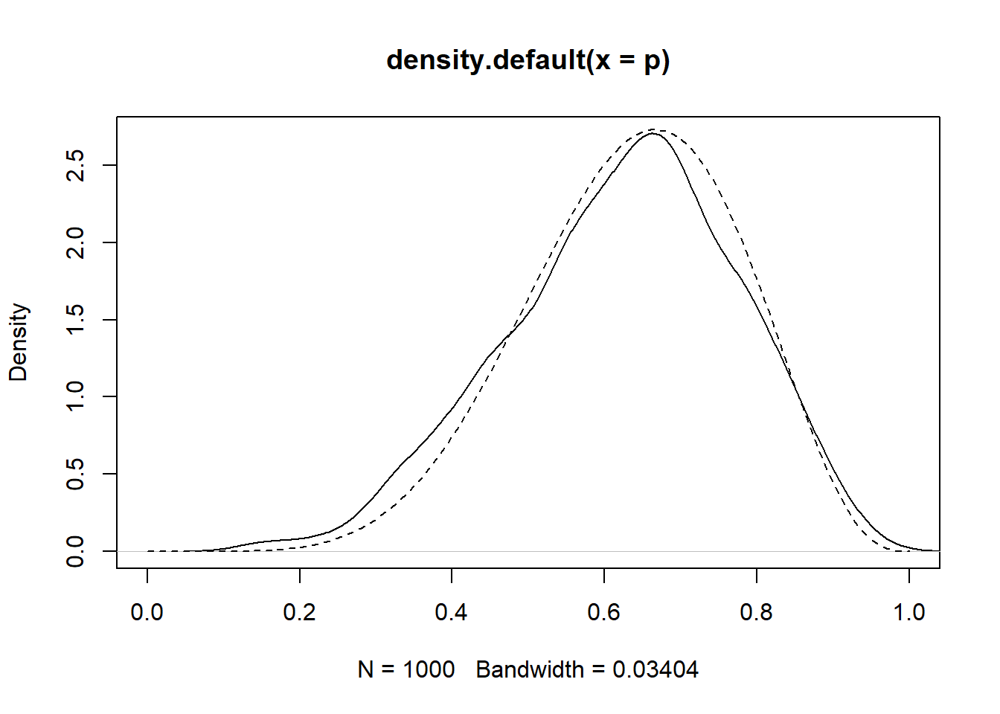
sample <- c('W','L','W','W','W','L','W','L','W')
W <- sum(sample=='W') # No. of W observed
L <- sum(sample=='L') # No. of L observed
p <- c(0,.25,.5,.75,1) # Proportions W
ways <- sapply(p, function (q) (q*4)^W*((1-q)*4)^L)
prob <- ways/sum(ways)
cbind(p, ways, prob) p ways prob
[1,] 0.00 0 0.00000000
[2,] 0.25 27 0.02129338
[3,] 0.50 512 0.40378549
[4,] 0.75 729 0.57492114
[5,] 1.00 0 0.00000000sim_globe <- function (p=.7, N = 9) {
sample(c('W','L'), size = N, prob = c(p, 1-p), replace=TRUE)
}
sim_globe()[1] "W" "W" "W" "W" "W" "W" "W" "W" "L"replicate(sim_globe(p = .5, N = 9), n = 10) [,1] [,2] [,3] [,4] [,5] [,6] [,7] [,8] [,9] [,10]
[1,] "W" "L" "W" "W" "L" "L" "L" "L" "L" "L"
[2,] "W" "W" "W" "L" "W" "W" "W" "L" "W" "W"
[3,] "L" "W" "W" "L" "W" "L" "W" "L" "W" "W"
[4,] "L" "W" "W" "W" "W" "L" "W" "L" "W" "W"
[5,] "W" "L" "L" "L" "W" "W" "L" "L" "L" "W"
[6,] "L" "L" "W" "L" "L" "L" "L" "L" "W" "L"
[7,] "W" "L" "L" "W" "L" "L" "W" "W" "W" "W"
[8,] "L" "W" "W" "L" "W" "W" "L" "L" "L" "L"
[9,] "W" "W" "L" "W" "W" "L" "L" "W" "L" "L" sum(sim_globe(p = .5, N = 1e4 )=='W')/1e4[1] 0.5044library(ggplot2)Warning: package 'ggplot2' was built under R version 4.2.2compute_posterior <- function (the_sample, poss = c(0,.25,.5,.75,1)) {
W <- sum(the_sample=='W') # No. of 'W'
L <- sum(the_sample=='L') # No. of 'L'
ways <- sapply(p, function (q) (q*4)^W*((1-q)*4)^L)
post <- ways/sum(ways)
# bars <- sapply(post, function (q) make_bar(q))
# data.frame(poss, ways, post=round(post,3), bars)
df <- data.frame(poss, ways, post=round(post,3))
ggplot(aes(x=poss, y=post), data=df)+
geom_bar(stat="identity")
}the_sample <- sim_globe()
print(the_sample)[1] "W" "L" "W" "W" "L" "W" "W" "W" "L"compute_posterior(the_sample)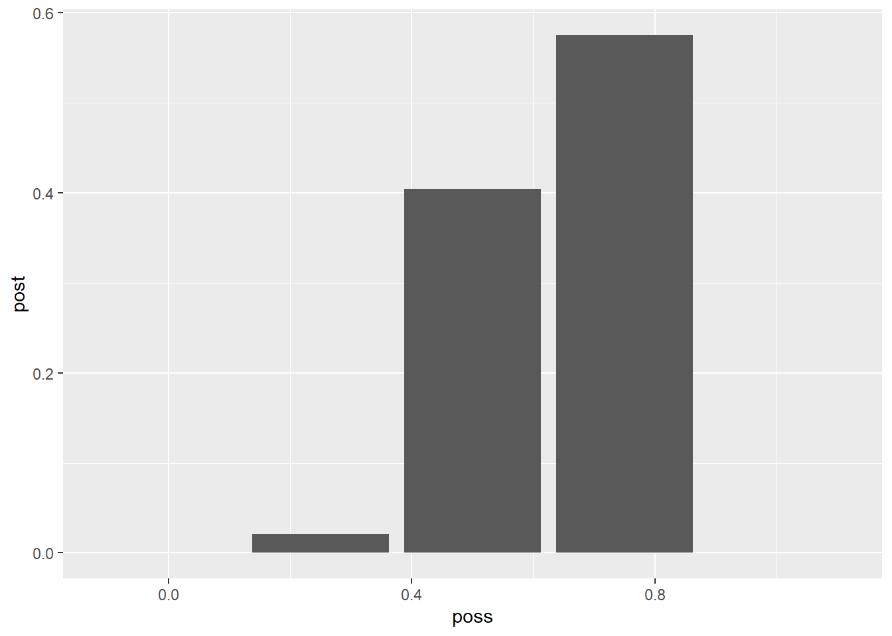
Calculating the posteriors using the conjugate prior beta
library(rethinking)Loading required package: rstanLoading required package: StanHeaders
rstan version 2.26.13 (Stan version 2.26.1)For execution on a local, multicore CPU with excess RAM we recommend calling
options(mc.cores = parallel::detectCores()).
To avoid recompilation of unchanged Stan programs, we recommend calling
rstan_options(auto_write = TRUE)
For within-chain threading using `reduce_sum()` or `map_rect()` Stan functions,
change `threads_per_chain` option:
rstan_options(threads_per_chain = 1)Do not specify '-march=native' in 'LOCAL_CPPFLAGS' or a Makevars fileLoading required package: cmdstanrThis is cmdstanr version 0.5.3- CmdStanR documentation and vignettes: mc-stan.org/cmdstanr- CmdStan path: C:/Users/lacor/OneDrive/Documents/.cmdstan/cmdstan-2.31.0- CmdStan version: 2.31.0Loading required package: parallelrethinking (Version 2.21)
Attaching package: 'rethinking'The following object is masked from 'package:rstan':
stanThe following object is masked from 'package:stats':
rstudentpost_samples <- rbeta(1e3, 6+1, 3+1)dens(post_samples, lwd=4, col=2, xlab="proportion water", adj=.1)
curve(dbeta(x, 6+1, 3+1), add=TRUE, lty=2, lwd=3)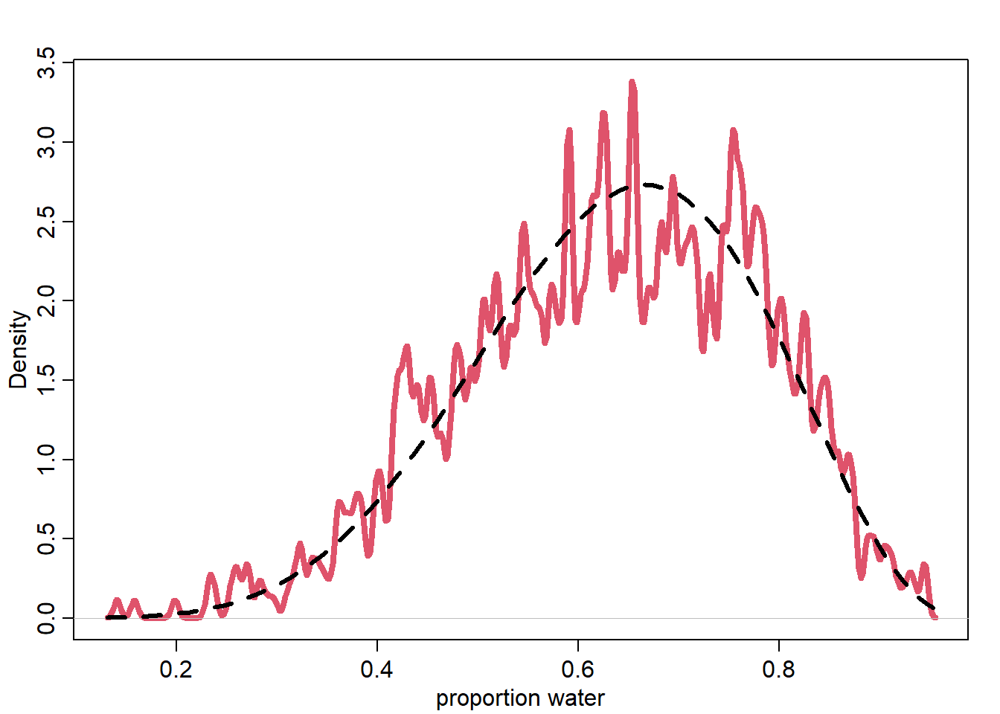
w <-6;n<-9;
p_grid <-seq(from=0,to=1,length.out=100)
posterior <-dbinom(w,n,p_grid)*dunif(p_grid,0,1)
posterior <-posterior/sum(posterior)
plot(posterior,col=2, type="l")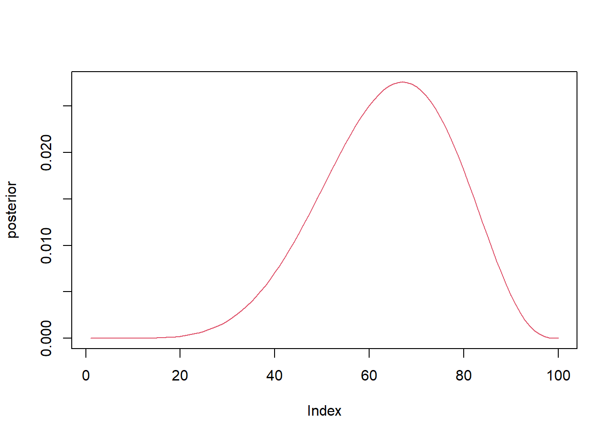
Lecture 3
Workflow
- State a clear Question
- State your causal Assumptions
- Use the causal sketch to define the Generative Model
- Use the Generative Model to build an Estimator
- Profit
Using the Howell database, we will construct a model to analyse the causal relationship between Height and Weight.
A new model is born when we write:
\[ W = \beta H + U \]
library(rethinking)
sim_weight <- function (H, b, sd) {
U <- rnorm(length(H),0,sd)
W <- b*H + U
return(W)
}H <- runif(200, min=130, max=170)
W <- sim_weight(H, b=.5, sd=5)
plot(W ~ H, col=2, lwd=3)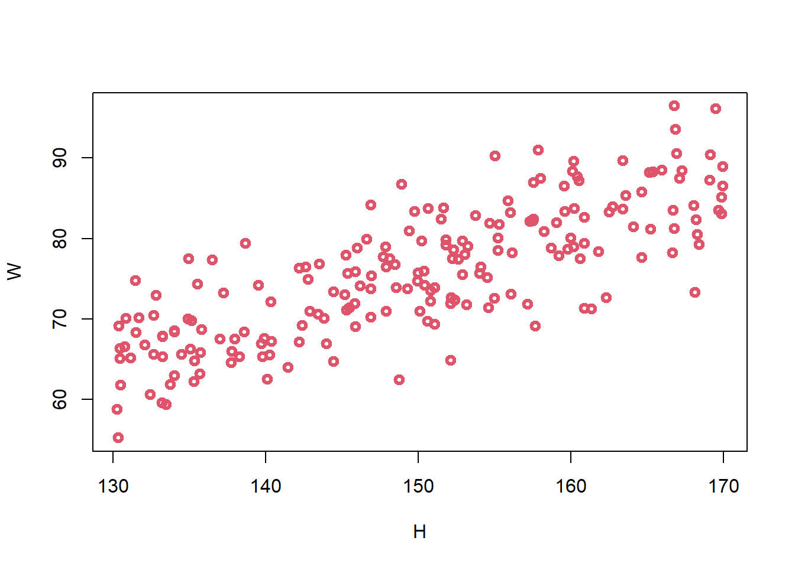
Our model can be written as follows
\[ W_i=\beta H_i+U_i \]
\[ H_i\sim Uniform(130, 170) \]
\[ U_i\sim Normal(0,\sigma^2) \]
and our estimator can then be written as
\[ E(W_i|H_i)=\alpha+\beta H_i \]
The posterior distribution is now written as
\[
Pr(\alpha,\beta,\sigma^2|H_i,W_i)\propto Pr(W_i|H_i,\alpha,\beta,\sigma^2)Pr(\alpha,\beta,\sigma^2)
\]
Now our Bayesian Model is defined as follows:
\[ W_i\sim Normal(\mu_i,\sigma^2) \]
\[ \mu_i = \alpha+\beta H_i \]
library(rethinking)
data(Howell1)
d <-Howell1[Howell1$age>=18,]#Similate a sample of 10 people
set.seed(93)
H <- runif(10,130,170)
W <- sim_weight(H,b=0.5, sd=5)
#Run Model
m3.1 <- quap(
alist(
W ~ dnorm(mu,sigma),
mu <- a + b*H,
a ~ dnorm(0,10),
b ~ dunif(0,1),
sigma~dunif(0,10)
),data=list(W=W, H=H))
#Summary
precis(m3.1) mean sd 5.5% 94.5%
a 5.1936596 9.42967209 -9.8767776 20.2640969
b 0.4858079 0.06515645 0.3816753 0.5899405
sigma 5.6393361 1.29435789 3.5707022 7.7079700n <- 1e3
a <- rnorm(n,0,10)
b <- runif(n,0,1)
plot(NULL,xlim=c(130,170),ylim=c(50,90),
xlab="height(cm)", ylab="weight(kg)",)
for (j in 1:50 ) abline(a=a[j], b=b[j], lwd=2, col=2)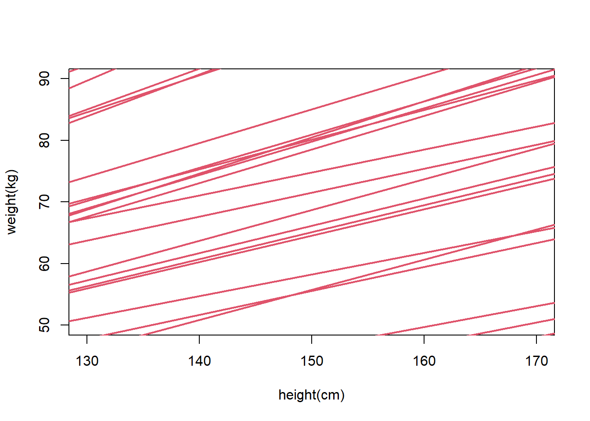
dat <- list(W=d$weight, H=d$height)
#k <- 10
#dat <- list(W=d$weight[1:k], H=d$height[1:k])
#Run Model
m3.2 <- quap(
alist(
W ~ dnorm(mu,sigma),
mu <- a + b*H,
a ~ dnorm(0,10),
b ~ dunif(0,1),
sigma~dunif(0,10)
),data=dat)
precis(m3.2) mean sd 5.5% 94.5%
a -43.3834467 4.17074113 -50.0490966 -36.7177968
b 0.5717844 0.02695064 0.5287121 0.6148568
sigma 4.2526514 0.16173248 3.9941717 4.5111311post <- extract.samples(m3.2)
plot(dat$H,dat$W,col=2,lwd=3,
xlim=c(min(dat$H),max(dat$H)), ylim=c(min(30,dat$w),max(dat$W)),
xlab="height(cm)", ylab="weight(kg)")
for (j in 1:20)
abline(a=post$a[j],b=post$b[j], lty=1)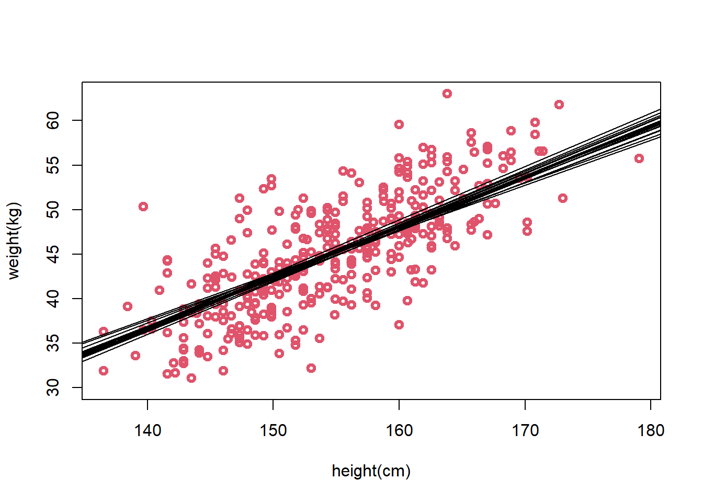
post <- extract.samples(m3.2)
pairs(post)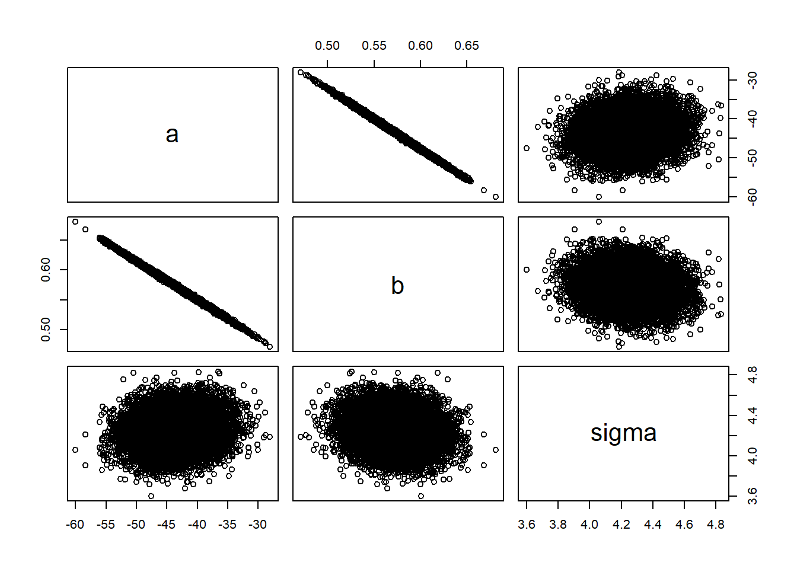
head(post) a b sigma
1 -39.89113 0.5483387 4.279574
2 -39.70825 0.5487077 3.989240
3 -46.81695 0.5954161 4.482863
4 -43.63421 0.5706343 4.377119
5 -42.21878 0.5643710 4.199400
6 -36.38253 0.5265746 4.076836plot(d$height,d$weight,col=2,lwd=3,
xlab="height(cm)", ylab="weight(kg)")
for (j in 1:20)
abline(a=post$a[j],b=post$b[j], lty=1)
height_seq <- seq(130,190,len=20)
W_postpred <- sim(m3.2,data=list(H=height_seq))
W_PI <- apply(W_postpred,2,PI)
lines(height_seq,W_PI[1,],lty=2,lwd=2)
lines(height_seq,W_PI[2,],lty=2,lwd=2)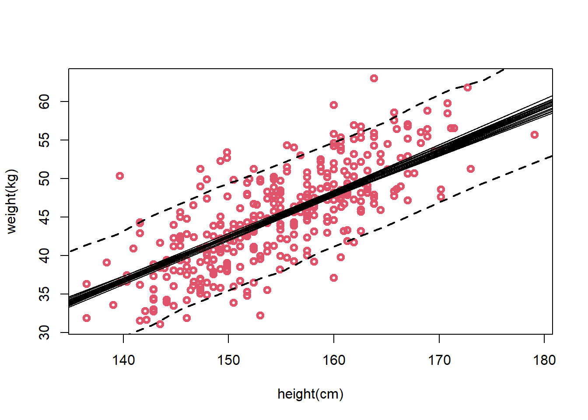